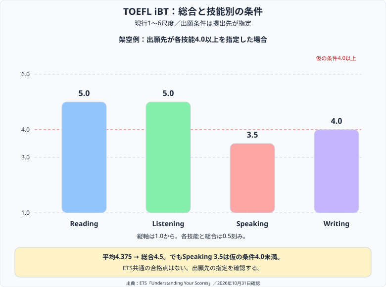

TOEFL iBTを準備するときは、4技能の形式だけでなく、受験料と出願条件も確認しましょう。この記事では現行の公式案内と学習計画の例を分けて紹介します。
会計分野の学習で取り組んだ計画と記録の考え方をもとに、4技能の課題と出願条件を整理します。
この記事で整理した内容から、次の学習で確認することを1つ選び、記録に残してみてください。
TOEFL iBTはReading・Listening・Writing・Speakingの4技能を測る英語試験です。2026年1月21日から試験内容とスコア尺度が更新されました。古い形式の教材や「80点」といった旧尺度の情報だけで計画せず、現行形式と出願先の指定を確認しましょう。
語句を動かして、貸出記録と英文を照合する
| 項目 | 2026年1月21日以降の内容 |
|---|---|
| 現行スコア | 各技能・総合とも1〜6、0.5刻み。総合は4技能の平均を最も近い0.5刻みに丸める |
| 旧尺度の比較表示 | 移行後2年間は、比較用の0〜120相当の総合スコアも併記 |
| 試験時間 | 説明を含め約2時間。Reading・Listeningは適応型で、問題数や所要時間が変わる場合がある |
| 受験方式 | テストセンターのコンピューター、または監督付きのHome Edition |
| 日本の受験料表示 | US$195（ETS料金ページでJapanを選択した表示。適用される税等は別途。円換算は決済時の条件による） |
| スコア有効期間 | 受験日から2年間 |
出典：ETS「Test Content and Structure」／ETS「Understanding Your Scores」／ETS「Test and Service Fees」（2026年10月31日確認）
確認したETSの資料から、他試験の点数をもとに「何時間でTOEFLの目標に届く」とする一律の必要時間は確認できませんでした。以前の勉強時間の換算表を撤回し、4技能の課題と使える時間から計画する方法に改めました。
ETSに共通の合格点・不合格点はありません。大学・課程などの受入機関が必要スコアを決めます。「学部なら何点」「大学院なら何点」と一律には扱えません。旧0〜120尺度だけで条件が載っている場合は、現行1〜6尺度の扱いを提出先に確認してください。
出典：ETS「Understanding Your Scores」（2026年10月31日確認）
| 記録する項目 | 確認する内容 |
|---|---|
| 募集単位 | 大学名だけでなく学部・専攻・入学年度 |
| 試験条件 | TOEFL iBTの受験方式、受験日、有効期間 |
| 総合条件 | 1〜6尺度の指定。旧尺度のみなら受入機関に確認 |
| 技能別条件 | Reading・Listening・Writing・Speakingごとの指定の有無 |
| 提出方法と締切 | スコアの送付方法と到着期限 |
次の図は、出願先が「各技能4.0以上」を指定したと仮定した架空の例です。全受験者共通の基準ではありません。TOEIC L&Rは2技能の試験で、TOEIC Speaking & Writingは別に実施されています。
出典：IIBC「TOEIC Program DATA & ANALYSIS 2026」4ページ（2026年10月31日確認）

以下のタスク名はETSの現行案内に基づきます。練習方法は編集部の提案です。
Complete the Words、Read in Daily Life、Read an Academic Passageの3種類です。学術文だけに限定せず、日常の文章も含め、語の形・文脈・文章の要点を確認する練習を組み合わせます。
Listen and Choose a Response、Listen to a Conversation、Listen to an Announcement、Listen to an Academic Talkです。講義だけを聞く旧来の説明では現行範囲をカバーできません。場面、話者の意図、必要な情報を聞き分ける練習案です。
聞いた内容を繰り返すタスクとインタビューに答えるタスクです。「独立型・統合型」という旧形式の説明を訂正しました。音声を聞いて発話し、録音を確認する練習と、質問に直接答える練習を分けて行いましょう。
Build a Sentence、Write an Email、Write for an Academic Discussionの3種類です。旧統合型を含む2種類という説明は現行形式に当てはまりません。文法だけでなく、課題の目的や相手に合う内容かを確認します。
出典：ETS「Test Content and Structure」（2026年10月31日確認）
大学の機材室の貸出について、英語の報告案を二通り作り、どちらが実際の記録に合うか確かめます。同じ4枚の語句で、まず「カメラを借りたのはデザイン科の学生だけ」と書いてください。次に「デザイン科の学生が借りたのはカメラだけ」に変えましょう。
語句を使いたい順に押してください。選んだ語句はもう一度押すと外せます。
組み立てた文
—
| 記録 | 借りた人 | 借りた物 |
|---|---|---|
| 1 | デザイン科の学生2人 | カメラ2台 |
| 2 | 同じデザイン科の2人 | 三脚1台 |
| 3 | 音楽科の学生1人 | 三脚1台 |
「デザイン科の学生が借りたのはカメラだけ」という報告を訂正するには、どの1件を示しますか。
Only design students borrowed cameras.
カメラを借りた人を見ると、記録1のデザイン科の2人だけです。この文は記録に合います。デザイン科の学生全員が借りたかどうかは分かりません。
Design students borrowed only cameras.
今度はデザイン科の2人が借りた物を見ます。記録1のカメラに加えて、記録2で三脚も借りています。この1件があれば「カメラだけ」とは言えません。音楽科が何を借りたかは、この文の判定に関係しません。
条件を一つ変えます。記録2は受け渡し前に取り消されていたとします。成立した貸出は記録1と3です。先ほどの2文は、それぞれこの記録に合いますか。人と物に分けて考えてください。
今回は両方の文が記録に合います。カメラを借りた人は記録1のデザイン科の2人だけです。その2人が受け取った物もカメラだけです。記録3の三脚を借りたのは音楽科の学生です。
ETSの Build a Sentence では語句を並べて文や疑問文を作ります。貸出記録を使った照合は編集部の自作練習です。ここでは only の焦点をはっきり示す二つの配置を扱います。ETSのWriting課題の説明 ／ Cambridgeの文法解説「Only」（2026年11月19日確認）
「何を練習するか」が決まったら、実際に一つ書いて見直します。ETSはWrite an Emailを、学内や日常の場面で依頼・情報提供・解決案などを書くタスクとして説明しています。ここでは編集部が作った架空の課題を使います。公式問題・公式解答・公式採点ではなく、時間と語数の条件も本番を再現していません。
出典：ETS「TOEFL iBT Writing Section」（2026年11月9日確認）。下のチェック項目は、この課題に合わせた編集部の見直し用です。
Your task
You organize a university book club with six members. Your group reserved Room A in the library for a study session next Tuesday from 4 to 5 p.m. The room will be closed for maintenance. Write an email to Ms. Green, the library coordinator.
まず解答を開かずに書いてください。日本語で整理すると「予約した部屋が使えない→別室を依頼→代案を示す→返信期限と理由を伝える」です。実在の予約や問い合わせではありません。
Dear Ms. Green,
I am writing about our book club's study session next Tuesday from 4 to 5 p.m. Room A, which we reserved for six students, will be closed for maintenance.
Could we use Room B at the same time instead? If it is already booked, we could meet on Wednesday from 4 to 5 p.m. Please let me know by Monday whether either option is available so that I can inform the group.
Thank you for your help.
Best regards,
Mina
これは一つの書き方です。別の表現でも要求を満たせます。長い文や難しい語を増やすことだけを目標にせず、内容が伝わり、相手に合う依頼になっているかを見直します。この例に公式スコアは付けていません。
Our room has a problem. Change it. Is Wednesday okay?
不足：どの予約か、何が問題か、希望する別室、代案の時刻、返信期限が分かりません。直接の命令だけでは、この相手への依頼として配慮も足りません。文法が通るかと、課題の要求を満たすかを別々に確認します。
修正の一部：Could we use Room B next Tuesday from 4 to 5 p.m.? If it is unavailable, Wednesday at the same time would also work.
この2文は依頼と代案の修正です。これだけで完成とはせず、予約の問題・返信期限と理由・宛名と結びを補います。上の完成例と自分の初稿を、4つの要求ごとに照合してください。
次の4欄をノート等へ写して使う提案です。チェック数をTOEFLの得点に換算する表ではありません。文法・語彙・目的や相手に合う書き方は、ETSの案内と照合しながら別に見直します。
| 欄 | この課題の記入例 |
|---|---|
| 練習日・課題 | 自分の実施日／図書館の予約変更 |
| 初稿で足りなかった要求 | 代案を「水曜」だけにし、4〜5時を書き忘れた |
| 修正文と理由 | Wednesday from 4 to 5 p.m. |
| 次回の確認1点 | 提出前に、要求された日時・部屋・返信期限へ線を引く |
記入例も架空です。修正文の理由は「相手が空室を確認できるよう、代案の時間を特定するため」。実際に書いた初稿・修正文を残すと、次回に何を確かめるかを決められます。技能全体の練習は、上の自作メール例だけに偏らせず、ほかの現行タスクにも広げてください。
旧0〜120尺度と新1〜6尺度の対応は範囲として示されています。旧80点という目標を単一の新スコアに機械的に置き換えず、最新の募集要項を確認します。移行期の比較用総合スコアと、現在の技能別スコアも区別してください。
出典：ETS「Understanding Your Scores」（2026年10月31日確認）
学習時間を増やす前に、提出先と締切を決める提案です。技能別の最低点が指定されている場合は、その条件との差を確認します。総合条件だけの場合は、4技能の得意・不得意と改善しやすい項目を見て時間を配分しましょう。